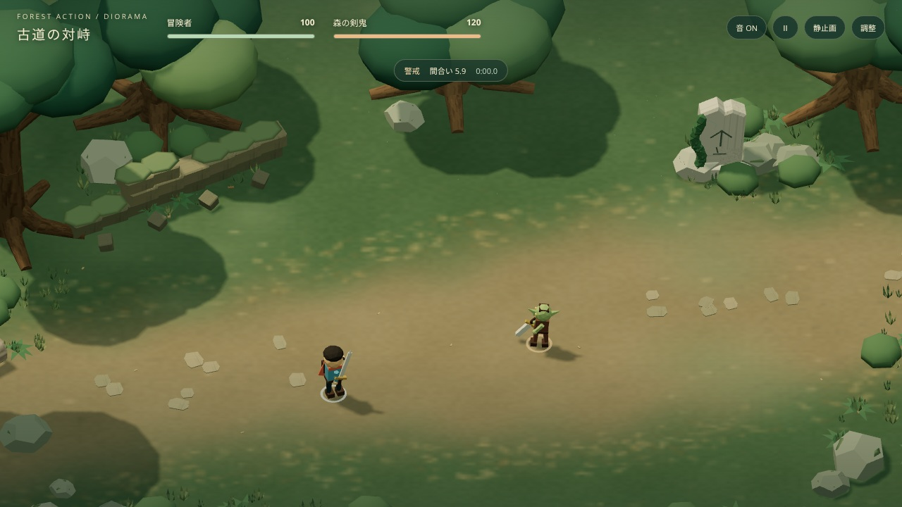
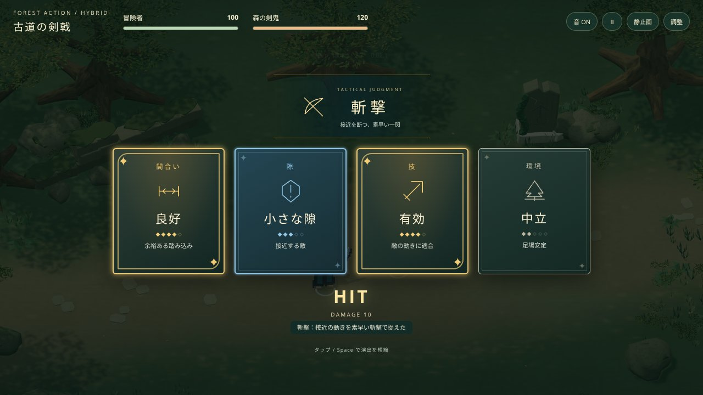
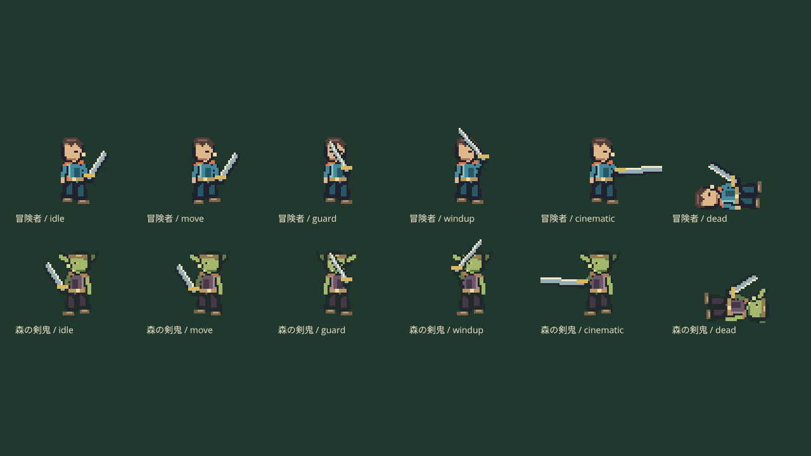

3Dの森に、ドット絵の剣戟
戦闘・カメラ・カードの条件を固定したまま、背景の造形と素材を改善し、キャラクターと戦闘エフェクトをドット絵へ置き換えました。背景の解像度は落としていません。
同じ初期戦況で比較



1280×720、HP100／120、初期座標・姿勢・戦闘時間0で撮影。構図の改修も比較対象なのでカメラは各版の初期設定です。比較用の静止画では操作ボタンを非表示にしています。画像をタップすると原寸で確認できます。
カードとタッチ操作はそのまま


変更範囲
| 項目 | ジオラマ版 |
|---|---|
| 樹木と質感 | 湾曲して先細る幹・枝・根。球体の樹冠を立体的な葉群へ変更 |
| 岩・遺構・倒木 | 変形した岩、摩耗した石材、苔の凹凸、樹皮と年輪 |
| 人物・剣戟 | 方向別スプライト、状態別アニメーション、ピクセルの斬撃と四角い被弾破片 |
| 戦闘・カード・敵AI | 14モジュール同一。1,450ステップの同入力比較で撃破まで一致 |
| 通常3D版・ピクセル版 | 既存ファイル・URL・公開方式を維持 |
詳細な検査結果と未確認事項は検証記録へ。60FPSの達成は端末依存で、iPhone実機の性能は未確認です。